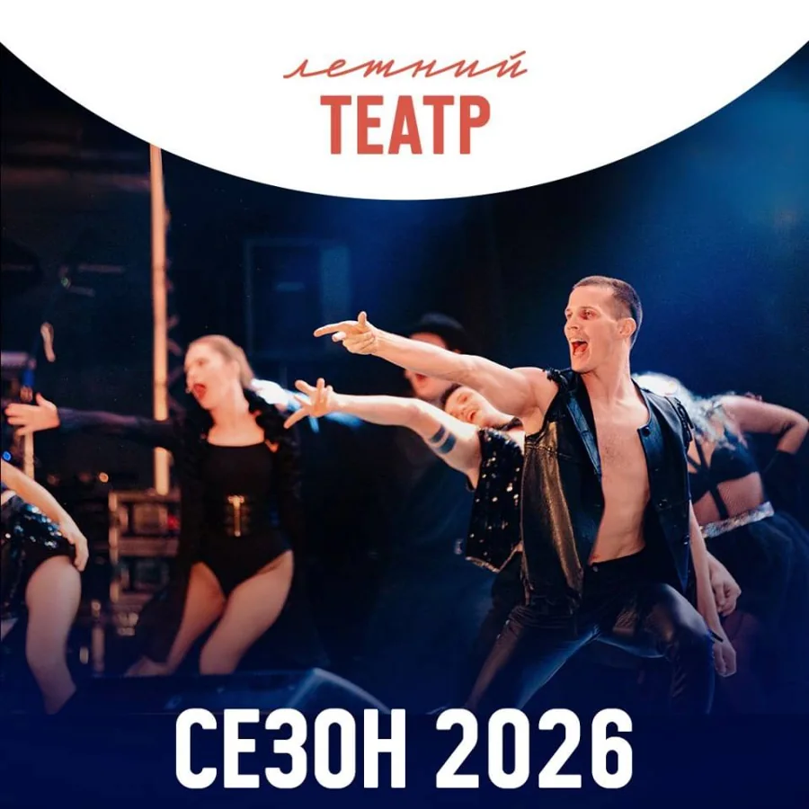

Итоги сезона-2026 в Летнем театре в парке Маяковского
Читать новость
47 событий и 42 000 зрителей: Летний театр подвёл итоги концертного сезона-2026.
Танцевали под ABBA, подпевали Варваре Визбор и восхищались иллюзиями: на три месяца Летний театр вновь стал центром притяжения ценителей музыки и атмосферных событий под открытым небом.
В сезоне прошли концерты звёзд и уральских артистов, театральные премьеры, джазовый фестиваль, иллюзионное шоу и выступления симфонических оркестров. На сцену вышли 1053 артиста. Театр продюсировал собственные и принимал городские фестивали: «Послушайте!», Фестиваль волшебников, трибьют-фест «Мировые легенды», «Лица улиц», «Ночь музыки», «Город здоровья» и ГикКон.
Более 42 000 зрителей принял большой амфитеатр, окружённый сосновым лесом.